Каталог интересных игр
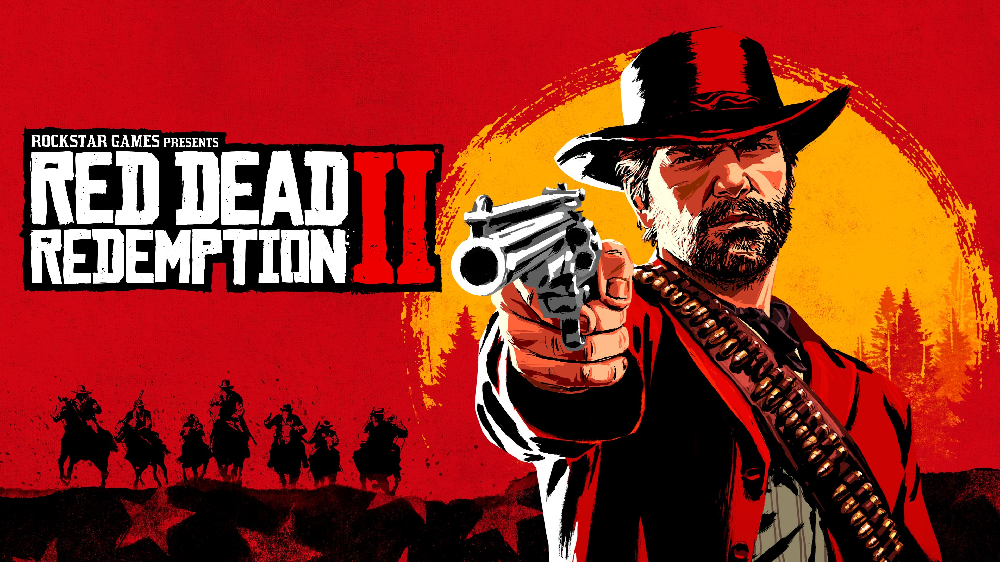
Red Dead Redemption 2
Red Dead Redemption 2 — компьютерная игра в жанрах action-adventure и шутера от третьего лица с открытым миром. Действие игры происходит на территории нескольких вымышленных штатов США на рубеже XIX—XX веков. Сюжет построен вокруг приключений банды Датча Ван дер Линде. Red Dead Redemption 2 предлагает игроку свободно путешествовать по обширному миру игры, самостоятельно находя интересные места и занятия — к числу таких возможных занятий принадлежат перестрелки, ограбления, охота на диких животных, скачки на лошадях и нахождения коллекционных предметов.
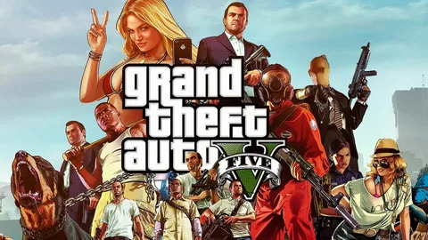
Grand Theft Auto 5
Grand Theft Auto V — компьютерная игра в жанре action-adventure с открытым миром, разработанная компанией Rockstar North и изданная компанией Rockstar Games. Grand Theft Auto V — культовая игра в жанре экшена от Rockstar Games, переопределившая стандарты открытого мира. Действие разворачивается в Лос-Сантосе и округе Блэйн — мире, где криминал, роскошь и хаос переплетаются в захватывающем повествовании о трёх антигероях: уличном авантюристе, ветеране ограблений и психопате, связанных общей целью.
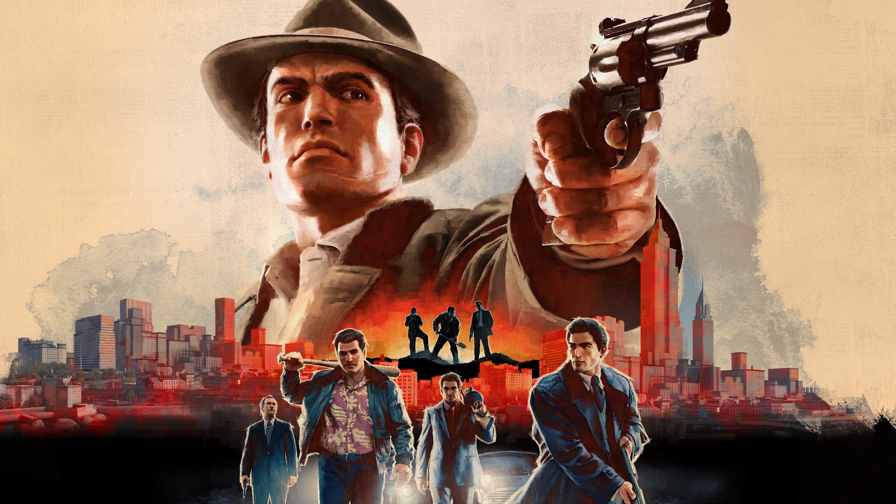
Mafia 2
Mafia II — это приключенческий боевик с открытым миром, разработанный чешской компанией 2K Czech. Это вторая часть серии игр Mafia.
Главный герой — Вито Скалетта, ветеран Второй мировой войны, который возвращается в родной город после службы. Он присоединяется к итальянской мафии и начинает свою карьеру в преступном мире.
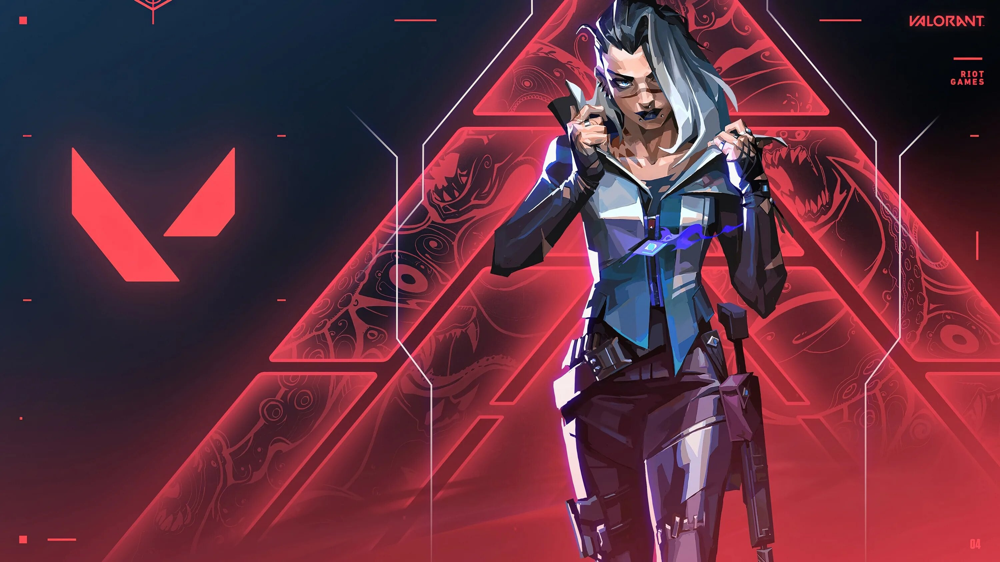
Valorant
Valorant — бесплатный командный шутер от первого лица в формате 5v5. Разработкой и изданием занимается студия Riot Games, известная по League of Legends. Действие разворачивается на Земле будущего, где появилось редкое вещество радионит. Оно является источником энергии, и под его влиянием персонажи игры (агенты) получили свои суперспособности. В его сборе очень заинтересована организация Kingdom, игроки же должны ей помешать. Игровой процесс предполагает противостояние двух команд по пять игроков. Одна группа защищается, другая — нападает. Атакующие должны установить бомбу (здесь она называется «спайк») в определённых зонах, обороняющиеся — обезвредить «спайк». Победа достаётся той команде, которая выполнила задание или сумела уничтожить всех соперников.
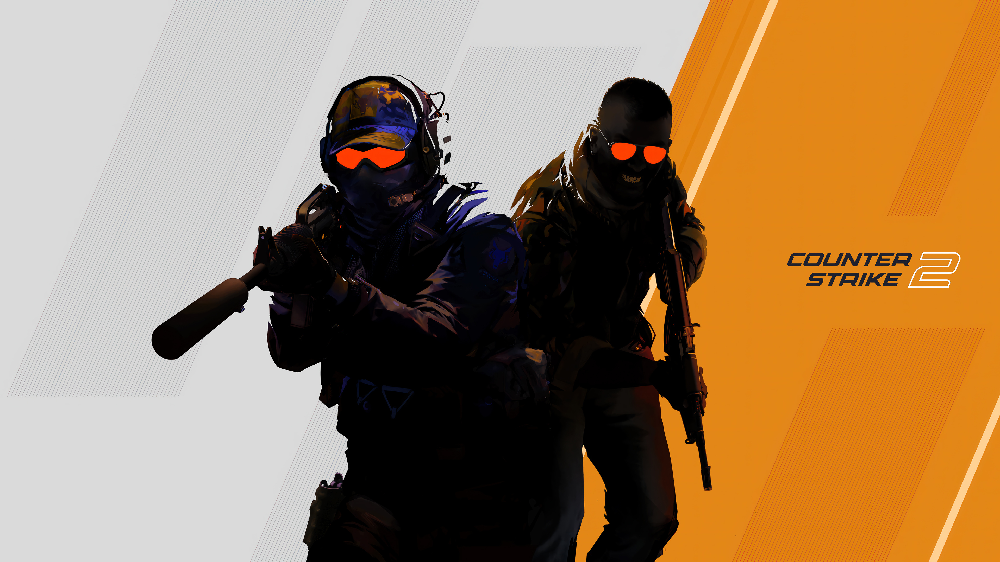
Counter-Strike 2
Counter-Strike 2 — компьютерная игра в жанре многопользовательского тактического шутера от первого лица, разработанная компанией Valve. Две команды соревнуются за выполнение различных задач в разных игровых режимах. В игре представлено шесть игровых режимов, включая соревновательный, премьер-режим, обычный, напарники и бой насмерть.
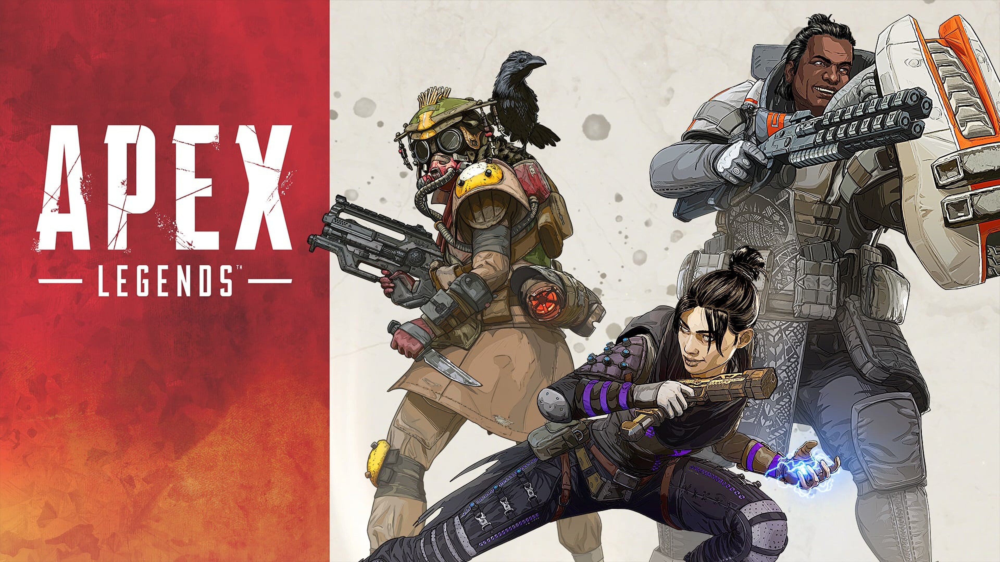
Apex Legends
Apex Legends — компьютерная игра в жанре многопользовательского геройского шутера от первого лица и королевской битвы. Разработана американской студией Respawn Entertainment и выпущена компанией Electronic Arts 4 февраля 2019 года. Игровой процесс предполагает многопользовательскую онлайн-игру в жанре «королевская битва», в которой на одной карте сталкиваются до 60 игроков, действующих группами по три человека — всего до двадцати команд. Помимо основного режима, присутствуют также режимы «Командный бой», «Гонка вооружений» и «Контроль» (захват 3 точек). Действие разворачивается в недалёком будущем, в межпланетном регионе под названием Фронтир. В игре принимают участие команды легендарных бойцов со всего Фронтира, их цель — слава, богатство и выживание любой ценой.
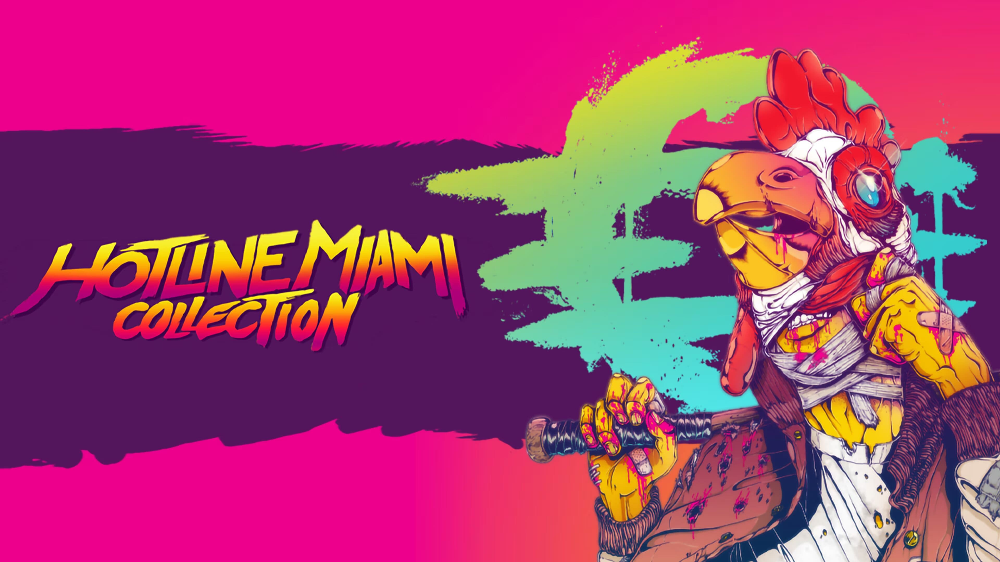
Hotline Miami
Hotline Miami — компьютерная игра в жанре top-down shooter, которую разработала Dennaton Games и издала Devolver Digital. Действие игры разворачивается в 1989 году в Майами. В основном оно вращается вокруг безымянного молчаливого главного героя, которого фанаты прозвали «Джекет», получающего на свой автоответчик закодированные сообщения, приказывающие ему совершать вылазки с целью навредить местной русской мафии. Проект отличается крайним насилием и сюрреалистическим повествованием, а также саундтреком и визуальными эффектами, вдохновлёнными культурой 1980-х годов.
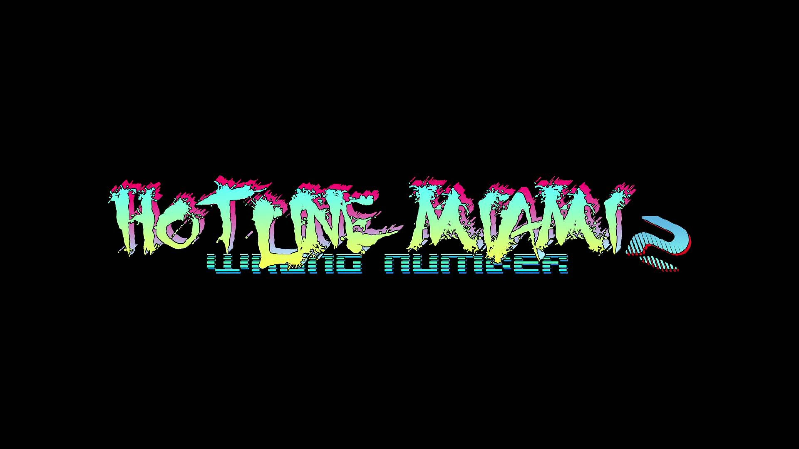
Hotline Miami 2: Wrong Number
Hotline Miami 2: Wrong Number — компьютерная игра в жанре 2D top-down shooter, разработанная Dennaton Games и изданная Devolver Digital. Действие игры происходит до, после и во время событий первой части, но сюжет сфокусирован на событиях, произошедших после уничтожения Джекетом (главным героем первой части) русской мафии по поручениям, полученным из загадочных сообщений по телефону. В игре появилось 13 управляемых персонажей, у каждого из них собственное видение истории. Маски из первой части снова появились в игре, а также добавлены новые маски, дающие новые способности.

Valheim
Valheim — компьютерная игра в жанре симулятора выживания с видом от третьего лица в открытом мире. Разрабатывается шведской компанией Iron Gate и издается компанией Coffee Stain. Сюжет разворачивается в Вальхейме — загробном мире, куда попадает павший в бою персонаж-викинг. Он должен выжить в Вальхейме и тем самым доказать, что достоин попасть в залы Вальхаллы.
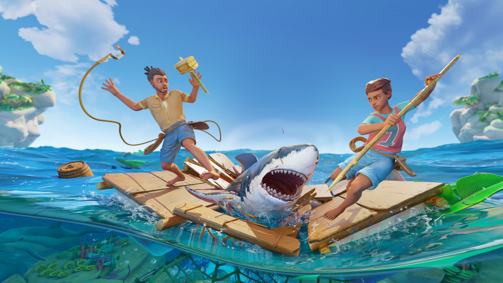
Raft
Raft — компьютерная игра в жанре симулятор выживания в открытом мире, разработанная шведской компанией Redbeet Interactive и изданная Axolot Games. Игровой процесс разворачивается посреди океана на плавающем плоту. В инвентаре игрока есть только крюк, который можно нацелить и бросить в океан, чтобы собирать разные предметы: доски, пластик, листья, бочки и т. д.. С помощью системы крафтинга игрок может сделать новые предметы из собранных материалов, изучать их, а также расширять, улучшать и защищать плот.
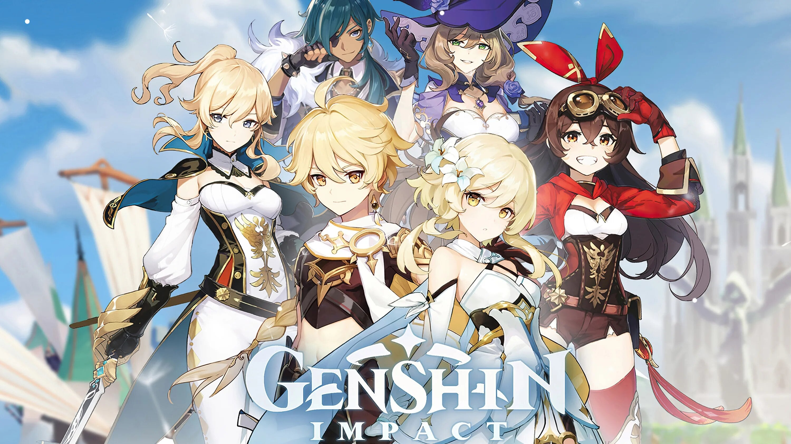
Genshin Impact
Genshin Impact — компьютерная игра в жанре action-adventure с открытым миром и элементами RPG, разработанная китайской компанией miHoYo Limited. Действие происходит в фэнтезийном мире Тейват, который является домом для семи различных народов, каждый из которых связан с отдельной стихией и управляется отдельным богом, называемым во вселенной игры «Архонт». Сюжет рассказывает о Путешественнике, который странствует по бесчисленным мирам со своим братом или же сестрой-близнецом (в зависимости от того, кого игрок выберет в начале игры), прежде чем разлучиться в Тейвате. Вместе со своей спутницей-компаньоном Паймон Путешественник отправляется на поиски своего потерянного близнеца, одновременно участвуя в делах народов Тейвата.
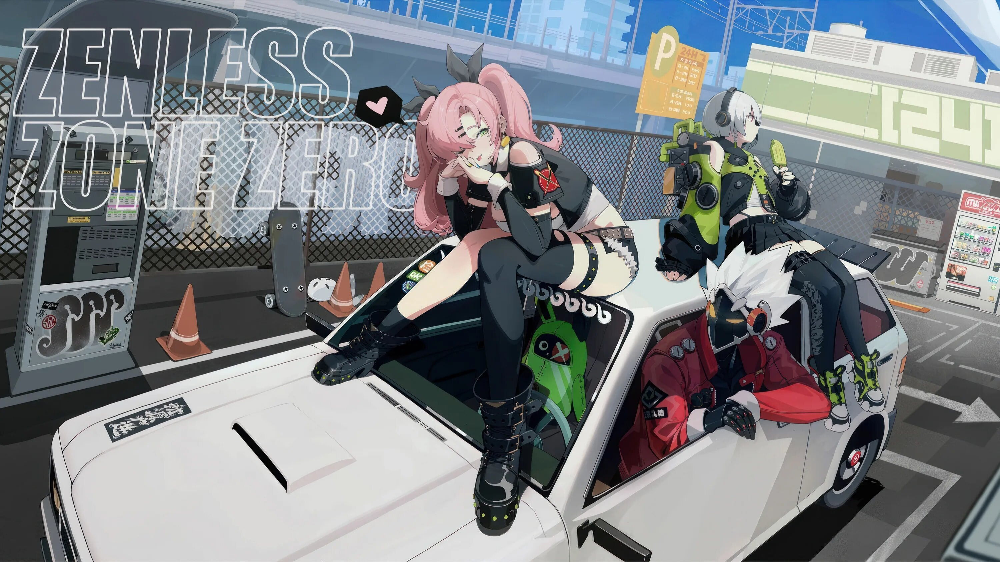
Zenless Zone Zero
Zenless Zone Zero — ролевая игра в жанре городского фэнтези, разработанная HoYoverse. Релиз игры состоялся 4 июля 2024 года для Android, iOS, PlayStation 5 и Windows. Сюжет разворачивается в постапокалиптическом футуристическом городе под названием Нью-Эриду. Существа, называемые Эфириалами, проникли в мир людей через порталы, именуемые Кавернами, и уничтожили большую часть человечества. Однако группа выживших создала бастион против захватчиков — Нью-Эриду, сумев противостоять нашествию благодаря добыче технологий и ресурсов Эфириалов.
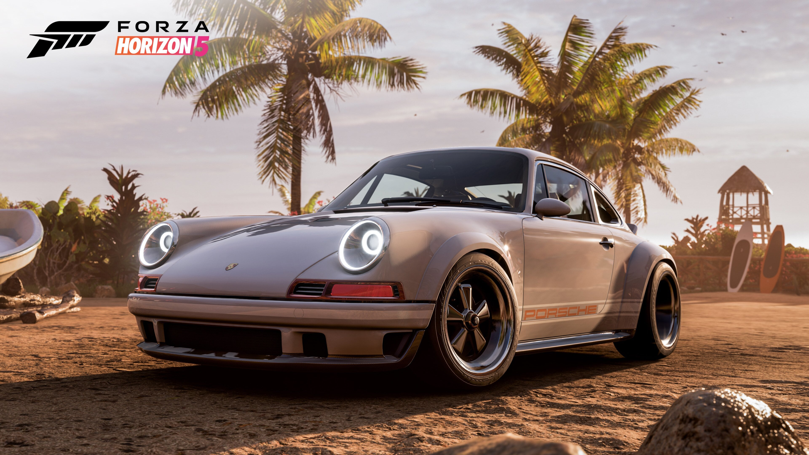
Forza Horizon 5
Forza Horizon 5 — гоночная видеоигра 2021 года, разработанная Playground Games и изданная Xbox Game Studios. Это пятая игра Forza Horizon и двенадцатая основная часть серии Forza. Игроки могут свободно исследовать открытый мир, а также участвовать в многопользовательских гонках и пройти режим кампании. Как автомобили, представленные в игре, так и персонажа игрока можно широко настроить.
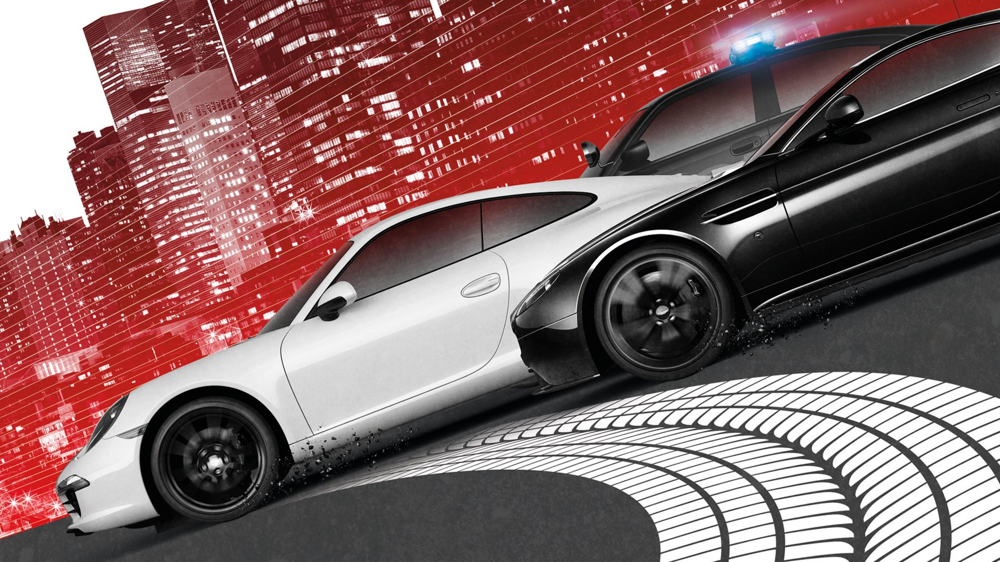
Need For Speed: Most Wanted 2012
Компьютерная игра серии Need for Speed в жанре аркадных автогонок, разработанная британской студией Criterion Games и изданная компанией Electronic Arts для игровых консолей, персональных компьютеров и мобильных устройств в 2012 году. В следующем году состоялся выпуск для игровой приставки Wii U под названием Need for Speed: Most Wanted U. Игра 2012 года является перезапуском Need for Speed: Most Wanted 2005 года.
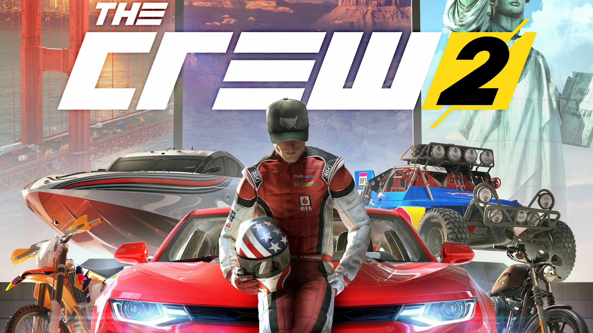
The Crew 2
The Crew 2 — многопользовательская спортивная аркада, позволяющая игрокам соревноваться на машинах, мотоциклах, самолётах и катерах, используя реально существующую гоночную технику.

Bioshoсk Infinite
BioShock Infinite — компьютерная игра в жанре шутера от первого лица с элементами RPG, стимпанка и научной фантастики. Игра была разработана студией Irrational Games под руководством геймдизайнера Кена Левина. Действие игры происходит в 1912 году в вымышленном летающем городе Колумбия. Главный герой, частный детектив Букер Девитт, проникает в город в поисках девушки по имени Элизабет. Позже Букер и Элизабет оказываются в центре войны между властями города и мятежными рабочими.
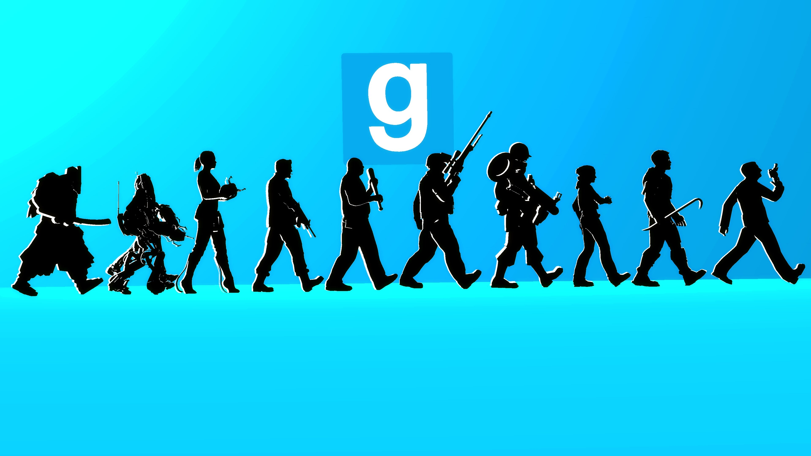
Garry's Mod
Garry’s Mod — компьютерная игра, физическая «песочница», которая позволяет игроку манипулировать объектами и экспериментировать с физикой. Реализм обеспечивается движком Source. Garry’s Mod известна поддержкой пользовательских модификаций. Благодаря этому сообщество создало множество игровых режимов, таких как Trouble in Terrorist Town и Prop Hunt, которые стали популярными и в других играх.
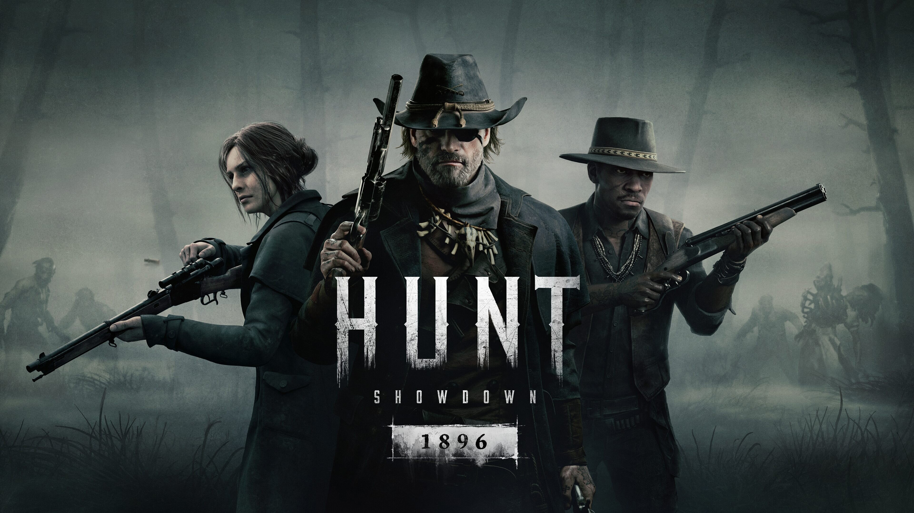
Hunt: Showdown 1896
Hunt: Showdown 1896 — тактический экстракшен-шутер от первого лица. События игры разворачиваются в конце XIX века. Героями выступают охотники, которые уничтожают монстров, терроризирующих население. Игровой процесс разделён на матчи, в начале которых игроки появляются на разных участках карты. Они должны убить монстра, забрать награду и найти выход с локации. По пути нужно собрать ценное снаряжение. Накопленный лут можно использовать в следующих матчах.
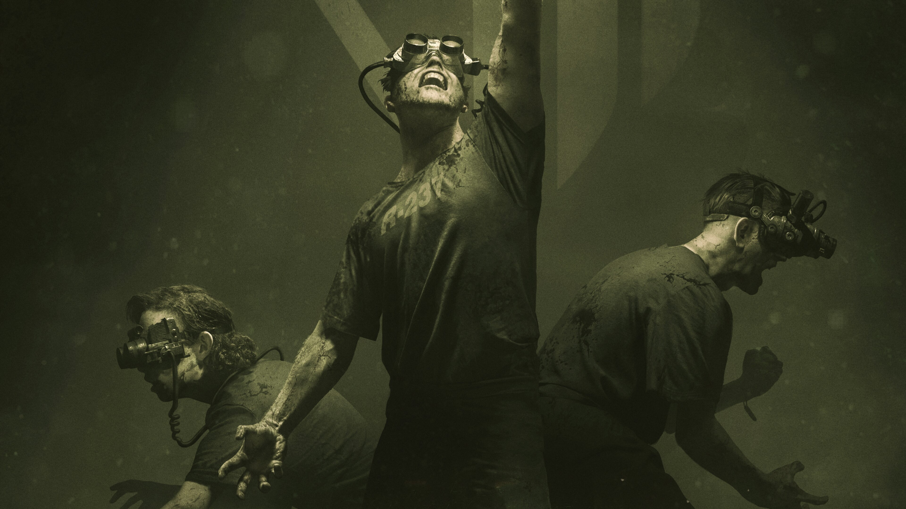
Outlast
Outlast — компьютерная игра в жанре survival horror от первого лица, разработанная и выпущенная компанией Red Barrels для Windows в 2013 году. Действие Outlast происходит в обветшалой психиатрической больнице. В лечебнице герой-журналист сталкивается с кровожадно настроенными безумцами. В отличие от многих подобных игр, игровой персонаж не имеет оружия, не умеет драться и вынужден убегать и прятаться от преследующих его врагов.
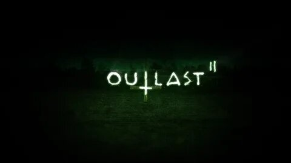
Outlast 2
Outlast 2 — компьютерная игра в жанре survival horror от первого лица, разработанная и изданная компанией Red Barrels. Игра вышла 25 апреля 2017 года на платформах Windows, PlayStation 4 и Xbox One одновременно. Игрок управляет журналистом Блейком Лангерманном, продвигающимся по сельской местности, с целью разыскать свою жену Линн, которая была похищена религиозными фанатиками. Блейк неспособен противостоять своим врагам, поэтому вынужден спасаться с помощью бегства и скрытности.
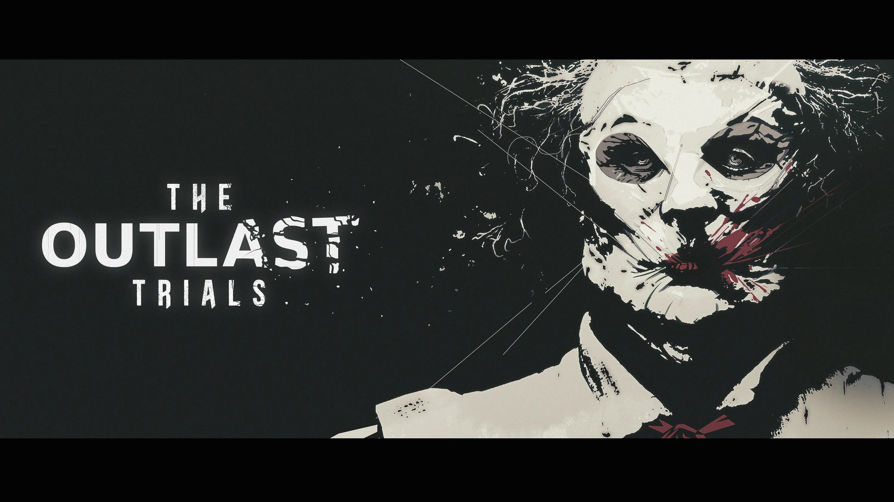
Outlast Trials
The Outlast Trials — компьютерная игра в жанре survival horror, разработанная и изданная канадской компанией Red Barrels. Это игра серии Outlast, являющаяся приквелом предыдущих игр и включающая испытуемых в таинственном эксперименте во времена холодной войны. Сюжет разворачивается вокруг группы подопытных, похищенных компанией Murkoff ещё во времена Холодной войны. Учёные тестируют новые методики промывания мозгов и контроля сознания на ничего не подозревающих добровольцах.
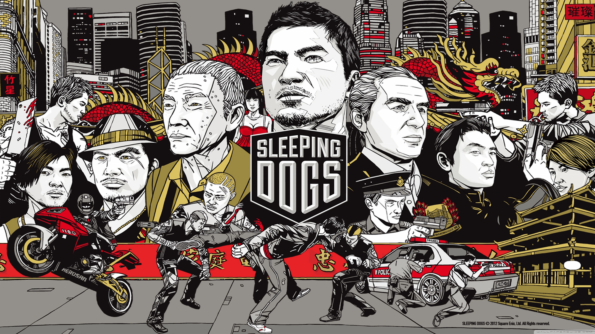
Sleeping Dogs
Sleeping Dogs — компьютерная игра в жанре action-adventure в открытом мире. Разработана студией United Front Games и издана Square Enix. Релиз состоялся 14 августа 2012 года для Windows, PlayStation 3 и Xbox 360. Сюжет разворачивается в Гонконге, где за привлекательной внешностью города скрывается мрачная тень — одна из самых могущественных преступных группировок в мире, триады. Их влияние распространяется на все сферы жизни города, а методы борьбы с конкурентами отличаются особой жестокостью. Главный герой — Вэй Шэнь, полицейский под прикрытием, чей опыт и навыки позволили ему проникнуть в ряды местной мафии. Он должен уничтожить преступную империю триад изнутри. Ради этого Вэй Шэню придётся доказать свою преданность и полезность боссам, участвуя в их грязных делишках.
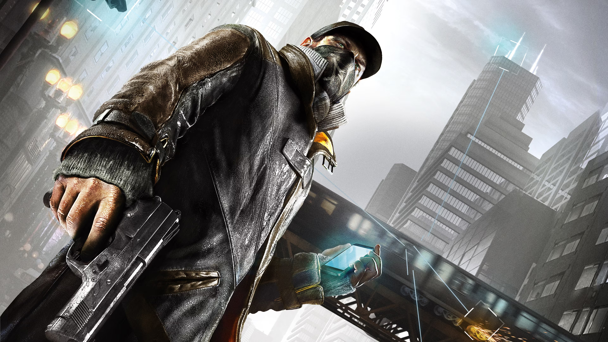
Watch Dogs
Watch Dogs — компьютерная игра в жанре приключенческого боевика с открытым миром, первая игра в линейке одноимённой серии. Выход игры состоялся в 2014 году. Игра разработана канадской студией Ubisoft Montreal. Сюжетная линия Watch Dogs построена на базе концепции информационной войны: данные стали взаимосвязаны, а в мире увеличивается использование технологий. Действие игры разворачивается в альтернативной версии реальности города Чикаго (штат Иллинойс). Главный персонаж — Эйден Пирс — высококвалифицированный хакер, который имеет доступ к Центральной операционной системе (ctOS). Система контролирует практически каждую часть города, а также содержит информацию обо всех его жителях и мероприятиях, которые могут быть использованы для различных целей.
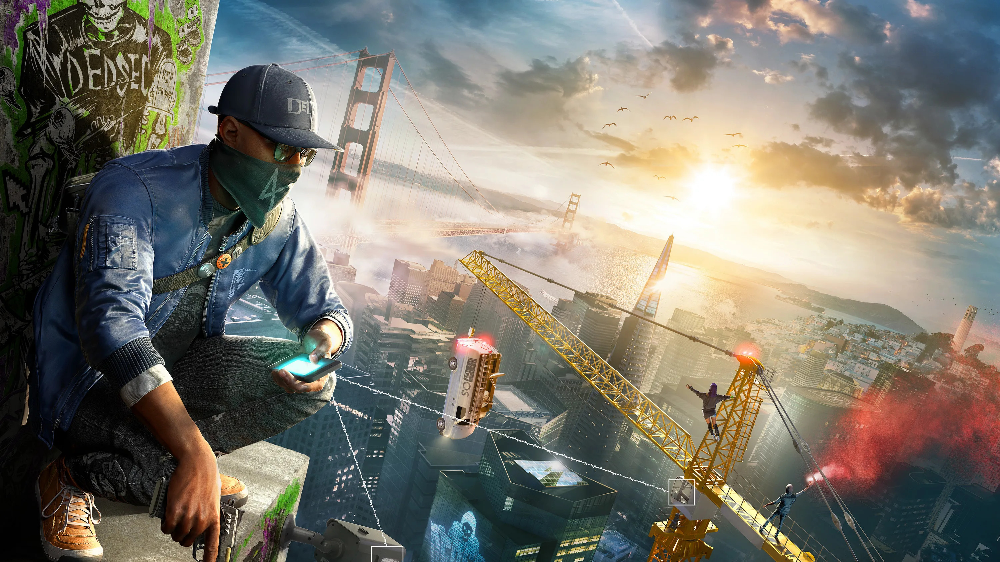
Watch Dogs 2
Watch Dogs 2 — компьютерная игра в жанре приключенческого боевика с открытым миром от французской компании Ubisoft. Вышла на платформах PlayStation 4 и Xbox One 15 ноября 2016 года, на PC — 29 ноября 2016 года. Сюжет: главный герой игры — хакер по имени Маркус Холлоуэй, который переезжает в Сан-Франциско и объединяется с группировкой активистов из организации DedSec. Вместе они бросают вызов алчным корпорациям и коррумпированным властям города, взяв под управление обновлённую универсальную систему ctOS 2.0.
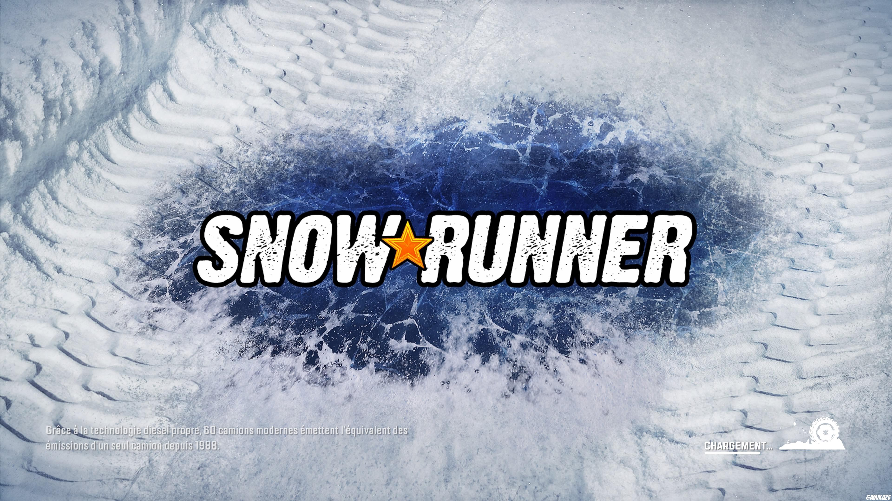
SnowRunner
SnowRunner — компьютерная игра в жанре автосимулятора бездорожья, разработанная студией Saber Interactive и изданная Focus Entertainment. Релиз состоялся 28 апреля 2020 года на Windows, PlayStation 4 и Xbox One. В заданиях SnowRunner требуется доставлять грузы, спасать людей и искать потерянные предметы, для чего приходится преодолевать различные препятствия, такие как грязь, вода, лёд и снег. С помощью лёгких внедорожников можно заранее разведать карту, изучить дороги и выбрать оптимальный маршрут, чтобы избежать грязи и воды.
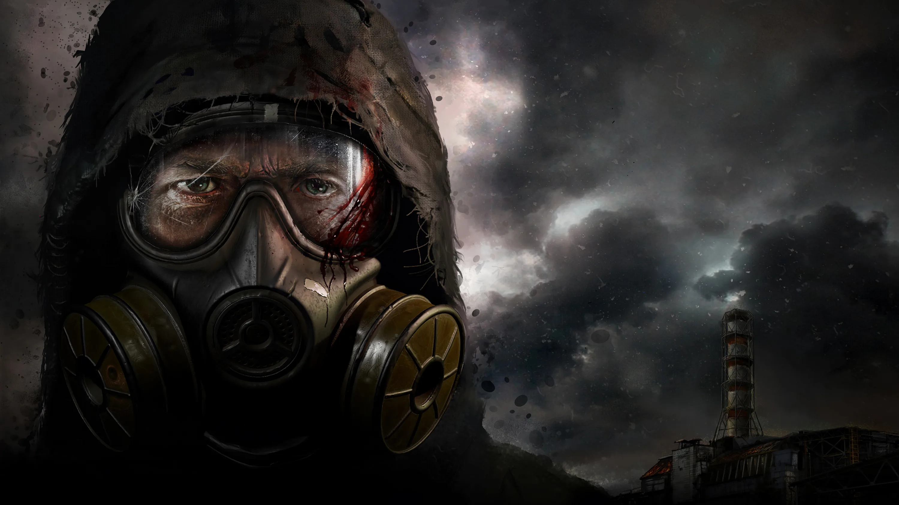
S.T.A.L.K.E.R.
S.T.A.L.K.E.R. — франшиза видеоигр в жанре survival horror от первого лица, разработанная украинским разработчиком игр GSC Game World. Действие сериала разворачивается в альтернативной версии современной Чернобыльской зоны отчуждения в Украине, где, согласно предыстории сериала, в 2006 году произошла таинственная вторая Чернобыльская катастрофа. В результате физические, химические и биологические процессы в этом районе были изменены, породив многочисленные аномалии, артефакты и мутантов.
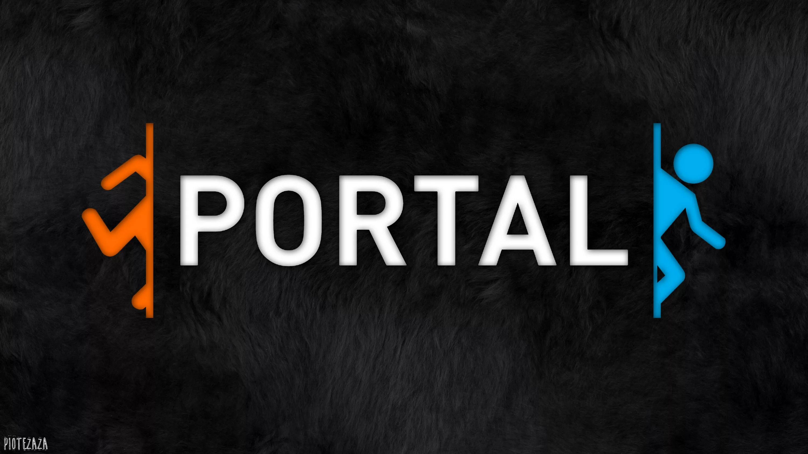
Portal
Portal — компьютерная игра в жанре головоломки от первого лица, разработанная американской компанией Valve Corporation и выпущенная 10 октября 2007 года на платформах Windows и Xbox 360 в составе сборника The Orange Box. События игры разворачиваются во вселенной Half-Life, в Лаборатории исследования природы порталов (Aperture Science). Игрок выступает в роли девушки по имени Челл, которая проходит испытания внутри этой Лаборатории
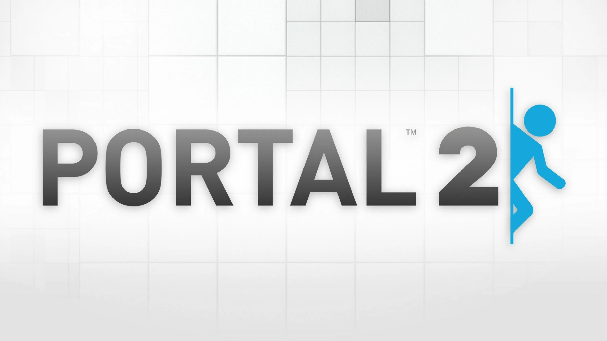
Portal 2
Portal 2 — компьютерная игра в жанре головоломки от первого лица, продолжение игры Portal (2007), разработанная компанией Valve Corporation. Сюжет игры разворачивается в разрушенной и заброшенной Лаборатории исследования природы порталов (Aperture Science). Главная героиня Челл пробуждается и обнаруживает, что лаборатории нужно как-то покинуть, с чем ей поможет найденный ею робот Уитли. Однако в процессе их прогулки по заброшенному комплексу они случайно включают GLaDOS, и она бросает девушку в комнаты испытаний, где игроку предстоит проходить разные препятствия и откуда нужно будет найти выход.
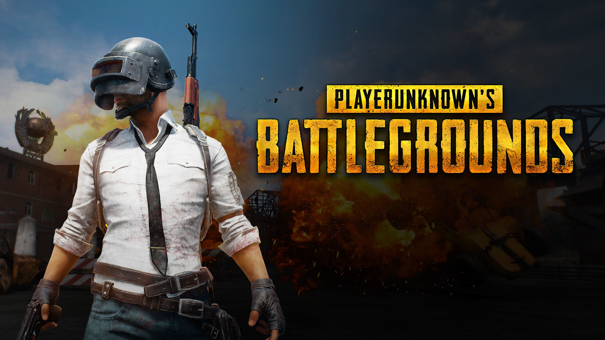
PUBG: Battlegrounds
PUBG: Battlegrounds — многопользовательская онлайн-игра в жанре королевской битвы. 100 игроков десантируются на остров, после чего ищут снаряжение и оружие, чтобы убить других участников и при этом самим остаться в живых. Доступная безопасная зона на внутриигровой карте со временем начинает уменьшаться, делая более тесным доступное пространство и выше вероятность столкновения игроков. Последний выживший игрок или команда побеждает в раунде.
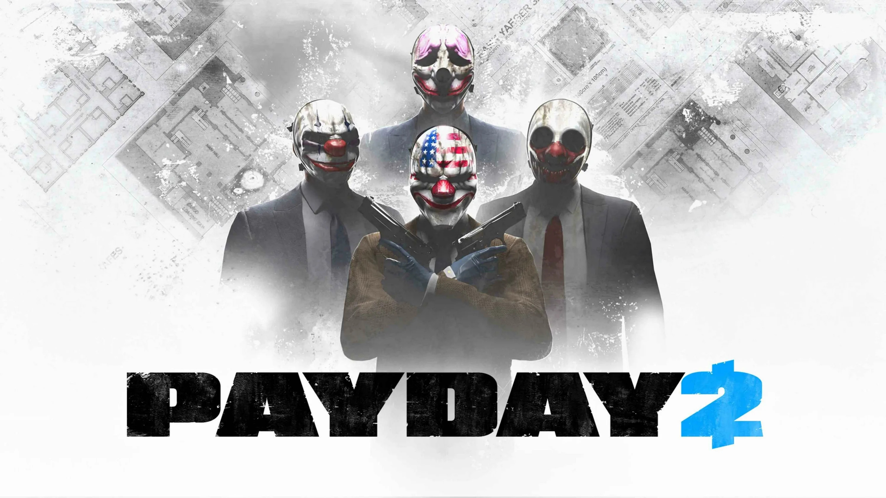
PAYDAY 2
Payday 2 — компьютерная игра в жанре шутера от первого лица (продолжение Payday: The Heist), разработанная Overkill Software, совместно с Starbreeze Studios, и изданная 505 Games. Игровой процесс ориентирован на четверых игроков. Хозяин игровой комнаты выбирает контракт, в котором оговариваются цели и задачи для команды, а также его сложность. В случае успеха каждый член команды получает деньги, очки опыта и одну случайную награду. Краденые игровые деньги можно потратить для усовершенствования своего инвентаря, а полученные очки опыта — для улучшения своих навыков.